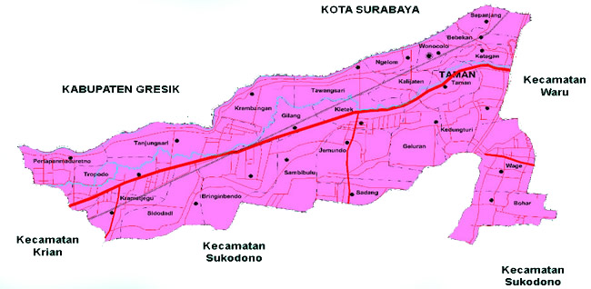
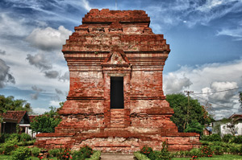

Sidoarjo dulu dikenal sebagai pusat Kerajaan Janggala. Pada masa kolonialisme Hindia Belanda, daerah Sidoarjo bernama Sidokare, yang merupakan bagian dari Kabupaten Surabaya. Daerah Sidokare dipimpin oleh seorang patih bernama R. Ng. Djojohardjo, bertempat tinggal di kampung Pucang Anom yang dibantu oleh seorang wedana yaitu Bagus Ranuwiryo yang berdiam di kampung Pangabahan.
Baca SelengkapnyaSejarah

Geografis
Secara Geografis, Sidoarjo terletak di daerah dataran rendah dan berada di antara dua aliran sungai besar, yaitu Kali Mas dan Kali Porong, keduanya adalah pecahan dari kali Brantas. Oleh karena itu, Sidoarjo dikenal dengan sebutan Kota Delta. Karena diapit oleh dua aliran sungai, lahan pertanian di kabupaten ini sangat subur dan memiliki potensi perikanan yang cukup tinggi. Perkembangan kabupaten Sidoarjo cukup pesat, banyak industri yang berada di kabupaten ini. Seperti Tas, Koper, Sandal, Sepatu, Alas Kaki, Garmen, Makanan, Fashion, Teknologi, Peralatan Dapur, dan Furniture.
Baca SelengkapnyaWisata
Monumen Jayandaru

Keberadaan monumen Jayandaru di area Alun-alun Kabupaten Sidoarjo menjadi ikon Kota Sidoarjo dan kebanggaan warganya.Monumen yang berada di jantung Kabupaten Sidoarjo ini menjadi tempat wisata hingga menjadi spot favorit bagi pengunjung untuk berfoto.
Baca SelengkapnyaCandi Pari
Candi Pari adalah sebuah peninggalan masa klasik Indonesia yang terletak di Desa Candipari, Kecamatan Porong, Kabupaten Sidoarjo, Provinsi Jawa Timur. Lokasinya sekitar 2 km ke arah barat laut dari pusat semburan Lumpur Lapindo.
Baca Selengkapnya